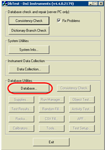

Database - Clearing DxC Unable to Update Control Lot Error
This procedure describes how to clear a
DxC Unable to Update Control Lot error on an integrated DxI instrument that uses software V5.1 or higher.
Wait for any in-progress samples to complete.
Open the Database Utilities function.
For Windows XP console PC with DxI Software 5.2 and below:
On the console PC, select
Start > Programs > NexGen or NexStep > DbTest.
In the
DbTest
window, select
Database.
Figure 405: DxI DbTest

If the
Database icon is not active, then use these steps to enable the
DevDbTest option in the registry:
Exit
DbTest.
Select
Start
> Run, and then type in
Regedit.
Navigate to
HKEY_LOCAL_MACHINE\SOFTWARE\BECKMAN\NexStep.
Right-click on
DevDbTest, select
Edit, and then change the number 0 to 1.
Open the
DbTest application.
Select
OK to the
Open Poet Database pop-up.
For Windows 8 Min PC with DxI Software 5.3.1 and above:
Note: DxI Software 5.3.1 is compatible with Windows XP console PC. If the software was installed on the Windows XP console PC, then follow the Windows XP section to launch DbTest application and enable the Database tools.
Press
Windows key, select DbTest UD icon or type
DbTest
and open the program.
In the
DbTest
window, select
Database.
Figure 406: DxI DbTest
If the
Database icon is not active, then use these steps to enable the
DevDbTest option in the registry:
Exit
DbTest.
Press
Windows
key, type
regedit, and open the Regedit program.
Navigate to
HKEY_LOCAL_MACHINE\SOFTWARE\BECKMAN\NexStep.
Right-click on
DevDbTest, select
Edit, and then change the number 0 to
1.
Open the
DbTest UD program.
Select
OK to the
Open Poet Database pop-up.
Clear a
DxC Unable to Update Control Lot error message.
For Windows XP console PC with DxI Software 5.2. and below and Access2 Software 3.4.2 and below:
Select
Start > Programs > NexGen or Access2 > NexGenUI UD or Access2 to launch the user interface.
For Windows 8 Mini PC with DxI Software 5.3.1 and above and Access2 Software 3.4.3 and above:
Note: DxI Software 5.3.1 and Access2 3.4.3 are compatible with Windows XP console PC, if either software was installed on the Windows XP console PC, then follow the Windows XP section to launch user interface.
Double click on the
NexGen Application or Access2 Application shortcut on desktop, or press
Windows key and select
NexGenUI UD or NexStepUI UD icon, or type
nexgenui or nexstepui and open the program.
Check the Event Log and verify that the
DxC Unable to Update Control Lot error message is no longer occurring.